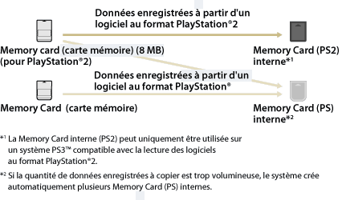

Jeu > Lecture d'un logiciel au format PlayStation®2 / PlayStation® > Utilisation des données sauvegardées sur des Memory Cards (cartes mémoires)
Utilisation des données sauvegardées sur des Memory Cards (cartes mémoires)
Pour utiliser les données sauvegardées sur une Memory Card (carte mémoire) (8 MB) (pour PlayStation®2) ou une Memory Card (carte mémoire) pour jouer à un jeu, vous devez copier les données sur une Memory Card interne située sur le disque dur. Vous devez utiliser un adaptateur pour Memory Card (carte mémoire) (vendu séparément) pour copier les données.
Avis
- Il est possible que certains titres de logiciels au format PlayStation®2 ou PlayStation® fonctionnent différemment avec le système PS3™ par rapport aux systèmes PlayStation®2 ou PlayStation®, ou qu'ils ne fonctionnent pas correctement avec le système PS3™.
- En outre, certains logiciels au format PlayStation®2 ne peuvent pas être lus sur certains systèmes PS3™. Pour plus d'informations, consultez [Types de disques lisibles], visitez le site Web SCE de votre région ou reportez-vous à la documentation qui accompagne votre système PS3™.
1. |
Sélectionnez |
|---|---|
2. |
Raccordez l'adaptateur pour Memory Card au système PS3™ et insérez une Memory Card. |
3. |
Sélectionnez l'icône des données sauvegardées que vous souhaitez copier à partir de la Memory Card affichée, puis appuyez sur la touche |
4. |
Sélectionnez [Copier]. |
5. |
Affecter fentes. |
 (Jeu) >
(Jeu) >  (Utilitaire de Memory Card (PS / PS2)).
(Utilitaire de Memory Card (PS / PS2)). (Memory Card (PS)) ou de
(Memory Card (PS)) ou de  (Memory Card (PS2)) apparaît.
(Memory Card (PS2)) apparaît. (Créer une nouvelle Memory Card interne) et suivez les instructions affichées pour créer une Memory Card interne.
(Créer une nouvelle Memory Card interne) et suivez les instructions affichées pour créer une Memory Card interne.Conseils
- Selon le type de données, celles qui sont enregistrées sur une Memory Card (carte mémoire) (8 MB) (pour PlayStation®2) ou une Memory Card (carte mémoire) sont copiées sur une Memory Card interne de la manière indiquée ci-dessous.
- La copie de certaines données sauvegardées peut durer plusieurs minutes.
- Pour copier toutes les données enregistrées sur une Memory Card (8 MB) (pour PlayStation®2) ou sur une Memory Card, sélectionnez la Memory Card à l'étape 3, appuyez sur la touche
 , puis sélectionnez [Copier] dans le menu d'options.
, puis sélectionnez [Copier] dans le menu d'options. - Il se peut que la copie de certaines données sauvegardées soit interdite. Si vous utilisez ce type de données sur un système PS3™, sélectionnez [Déplacer] à l'étape 4. Les données sauvegardées seront déplacées vers le disque dur et supprimées de la Memory Card.
- Les données enregistrées peuvent être retransférées ultérieurement sur la Memory Card.

Copie de données sauvegardées sur une Memory Card
Copiez les données d'un logiciel au format PlayStation®2/PlayStation® enregistrées sur le disque dur sur une Memory Card ou une Memory Card (8 Mo) (pour PlayStation®2). Vous devez utiliser un adaptateur pour Memory Card (vendu séparément) pour copier les données.
1. |
Sélectionnez |
|---|---|
2. |
Raccordez l'adaptateur pour Memory Card au système PS3™ et insérez une Memory Card. |
3. |
Sélectionnez l'icône des données enregistrées que vous souhaitez copier à partir de la |
4. |
Sélectionnez [Copier]. |
 (Memory Card (PS) interne) ou de la
(Memory Card (PS) interne) ou de la  (Memory Card (PS2) interne) sur laquelle les données sont enregistrées, puis appuyez sur la touche
(Memory Card (PS2) interne) sur laquelle les données sont enregistrées, puis appuyez sur la touche Conseils
- Il est impossible de copier collectivement sur une Memory Card plusieurs éléments de données sauvegardées dans la Memory Card interne.
- Il se peut que la copie de certaines données sauvegardées soit interdite. Si vous utilisez ce type de données sur un système PS3™, sélectionnez [Déplacer] à l'étape 4. Les données enregistrées seront déplacées vers le disque dur et supprimées de la Memory Card interne.
- Les données enregistrées peuvent être retransférées ultérieurement sur la Memory Card.